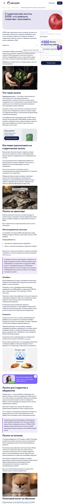

01
Новая модель контента вместо SEO
Пришла в компанию на производство поисковых статей. За год нейроответы заняли около четверти запросов, и модель, в которой статьи живут за счет поиска, перестала работать.
Что сделала
- Сменила фокус с поисковых статей на охватные, когда поиск стал приносить меньше результата
- Ввела гибридную модель: доля охватных и конверсионных материалов определяется CJM
- Сформулировала правила для архива: дорабатываем живые страницы, устаревшие не трогаем
Результат
×13
рост регистраций с контента за 15 месяцев
Контент перестал зависеть от выдачи: добавились внешние площадки, рассылка и телеграм.
Как модель выглядит на практике

Поисковая
Студенческие льготы 2026: что реально помогает экономить
Точный запрос и сезонность. Обновлена в октябре по правилу: дорабатываем то, что живое.
Открыть статью
1 / 3